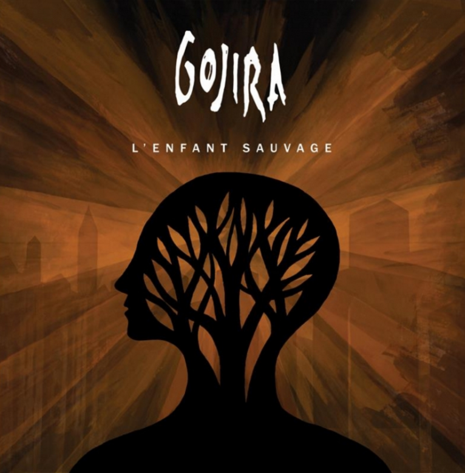

La banda francesa de metal Gojira, posiblemente una de las bandas de metal extremo más respetadas en el mundo actual, lanzó el 25 de junio su nuevo álbum 'L'Enfant Sauvage', el quinto álbum del cuarteto (el primero en Roadrunner). Grabada en Nueva York y producida por Josh Wilbur, “L'Enfant Sauvage” sigue a “The Way of All Flesh” (2008) que le había permitido a Gojira salir a las carreteras durante casi 2 años.
- L'enfant Sauvage - So long I've been trying to match It doesn't work, I'm trying, I don't know The aberration of this world, I tried to deal with It killed a part of me that was raging The pain is gone, the denial I ran away from instituitions I owe myself life There's no way I will respond to this passion Anger flowing through me There is light in this world I fight for The reason you won't leave this cage Betray your child The desire that you once had to reveal yourself Forgot to create your own life Anger Lies Denial This righteous anger boiling inside of us Won't last forever Don't fear to let it out Branches have grown through The wolf is your master The sky is all over me I run on time